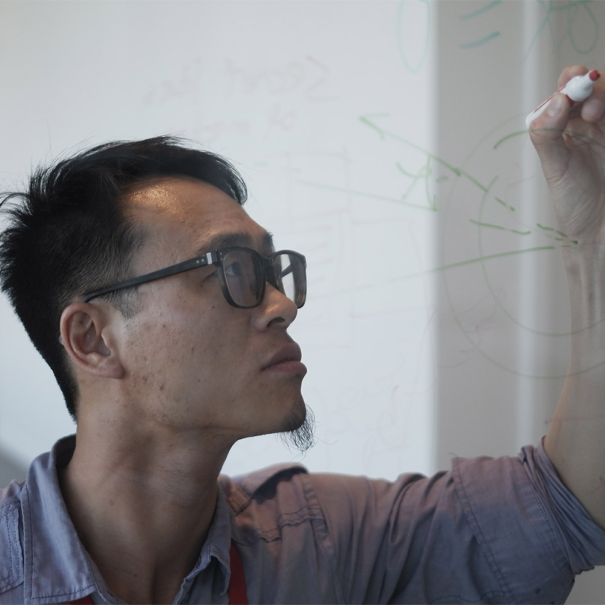
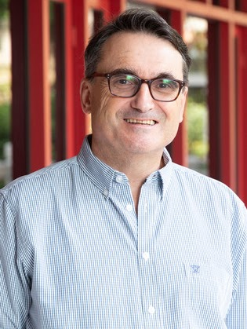
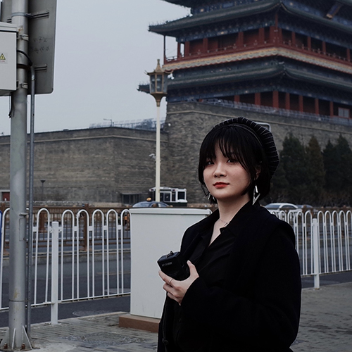
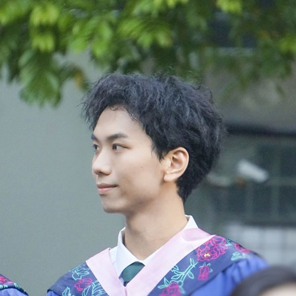
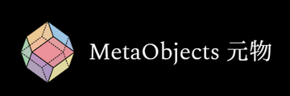

Team

RAY LC
RAY (Parsons MFA, UCLA PhD) creates exhibitions and interventions using environmental storytelling and human-machine interactions. He takes inspiration from his own research in human-computer interaction and neuroscience in works that probe human community's evolving relationship with technology. He takes perspectives from his own research in HCI in his artistic practice, with notable exhibitions at New York Hall of Science, Ars Electronica, NeurIPS, CVPR, Osage Gallery, Videotage, Goethe Institute, Hong Kong Arts Centre, PMQ, Science Gallery MSU, National Asian Culture Center Gwangju, IEEE VISAP, SIGGRAPH Asia. RAY founded the Studio for Narrative Spaces: https://recfro.github.io/

Richard Allen
Richard Allen is a film scholar whose work is well known the areas of film theory and philosophy, Hitchcock Studies, Indian Cinema, and melodrama. His books include Projecting Illusion (1995), Hitchcock's Romantic Irony (2007), and the forthcoming Storytelling in Hindi Cinema (2025). Since joining the School of Creative Media in 2016, Allen has developed research at the intersection of art and new media. He organized two international conferences on Machine Learning and Art, Art Machines (2019) and Art Machines 2 (2021), and, with Jeffrey Shaw he curated a major exhibition on computational art called Art Machines at the Indra and Harry Banga Gallery, CityUK (2020). As director of the Center for the Center of Applied Computing and Interactive Media (ACIM), Allen is collaborating with Jeffrey Shaw (HKBU) on Future Cinema Systems and as project director of City in Time, an immersive AR Hong Kong cultural heritage installation in collaboration with the Tourism Commission, which is accessible through a mobile app.

Liu Sijia Star
Sijia Liu, also known as Star, is a PhD student at the School of Creative Media, City University of Hong Kong. She earned her MFA from SCM CityU and a BFA from the School of the Art Institute of Chicago. Her extensive experience includes art creation, design, curation, and event planning. As a practitioner in HCI with an artistic background, she explores the potential of GenAI technology to assist individuals in creative professions. Her current research focuses on understanding the influence of dreams on creativity support from a human-centered computing perspective, facilitated by the use of GenAI technology. As a curator, the research-based practice exhibition supported by HKADC, was showcased at Fringe Club. Star's academic work is published at ACM CC, Multimedia, ISEA, etc. Her personal website: starliusijia.com

Liu Bowen
Bowen is a full-time research assistant at the School of Creative Media. He pursued a masters at Central Academy of Fine Arts, where he exhibited with works in Beijing. His creative scope encompasses generative art, mechanical installations, and visual effects experiments. He is also an artist.

Zeng Xiaoke
Xiaoke is a full-time research assistant at the School of Creative Media, who came from South China Normal University. He is interested in exploring the creative applications of XR, AIGC, and BCI for supporting future creative processes. He is also a designer and director who created fictional stories and animation videos of future products.
Prof. Sidney C.H. Cheung
Prof. Sidney C.H. Cheung received scholarships given by Japanese Government/Monbusho (1984-94) for his undergraduate, masters and doctoral programmes and his anthropological training in Japan. He is the Professor and Associate Director of the Centre for Archaeology and Cultural Heritage Studies. He has been doing research about freshwater fish farming in Hong Kong in order to understand the fishermen and their perspectives on environmental change, sustainable development and wetland conservation. Currently, he is working on an ongoing multi-site research project exploring the impact of the move of American crayfish from the U.S. to Asia and on the global consumption and production of crayfish in China, Japan, and the U.S. Besides academic publications, Cheung was co-hosting three RTHK radio/television programmes entitled: "Hong Kong Foodways and Culture" in 2004, "Culture Unconventional" in 2005, and more recently "Taste of China" in 2022, through which he was able to bring anthropological perspectives to the mass public.

Meta Objects
MetaObjects is an art & technology studio based in Hong Kong. MetaObjects worked with the team to create a VR experience.
Hong Kong Arts Development Council
This project is supported by the Hong Kong Arts Development Council (HKADC).